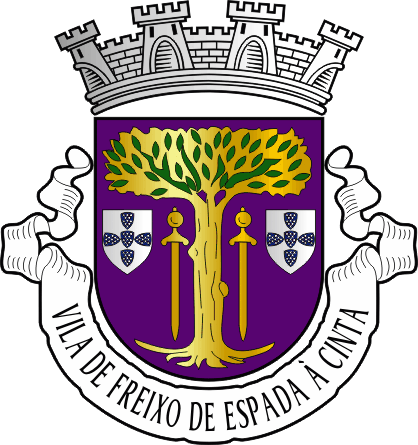

A historia de freixo de espada a cinta
Há diversas explicações para o curioso nome desta vila. Uns dizem que teve origem no nome de um fidalgo godo "Espadacinta", outros no brasão de um fidalgo leonês que tinha um freixo e uma espada ou, ainda, na lenda que diz que D. Dinis rei de Portugal, quando fundou a localidade no séc. XIV, amarrou a sua espada a um freixo, antes de se encostar à árvore a descansar. Essa árvore, de grande porte, está há mais 500 anos no largo principal da vila e merece observação atenta.
Freixo atualmente
Há diversas explicações para o curioso nome desta vila. Uns dizem que teve origem no nome de um fidalgo godo "Espadacinta", outros no brasão de um fidalgo leonês que tinha um freixo e uma espada ou, ainda, na lenda que diz que D. Dinis rei de Portugal, quando fundou a localidade no séc. XIV, amarrou a sua espada a um freixo, antes de se encostar à árvore a descansar. Essa árvore, de grande porte, está há mais 500 anos no largo principal da vila e merece observação atenta.